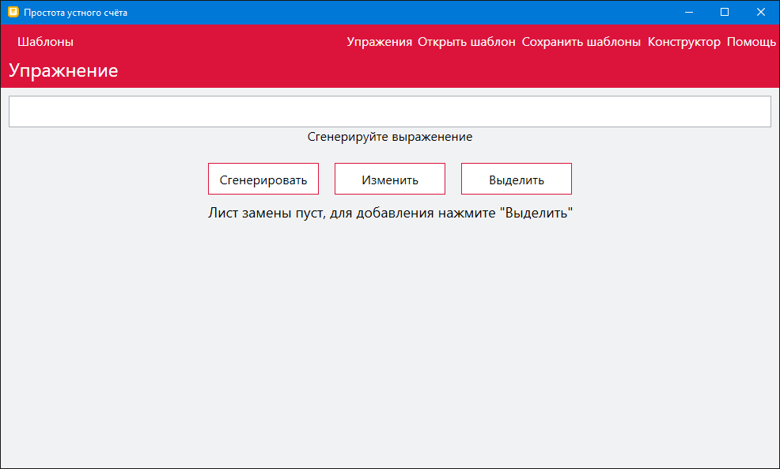
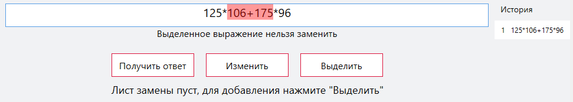
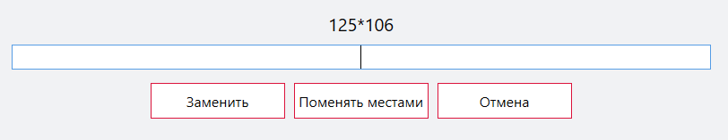
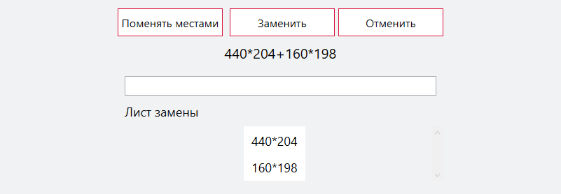
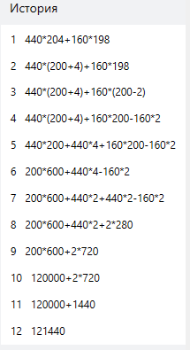

- Среду эмулирования
- Генератор выражений
- Конструктор шаблонов
- Операционная система: Windows
- Необходимые пакеты: .NET Framework (версии больше 4.5.2)
Среда для эмулирования преобразований арифметических выражений
Программа “Устный счёт”, предназначена для демонстрации, а также отработки навыков преобразования
арифметических выражений.
Программы включает:
Системные требования
Инструкции
Для запуска программы необходимо скачать архив “Устный счёт”, распаковать и запустить .exe файл. Для функционирования программы на компьютере должен быть установлен .NET Framework (версии больше 4.5.2), на большинстве компьютеров он уже установлен, но официальная актуальная версия всегда присутствует на сайте Microsoft.
Главное окно
Интерфейс программы состоит из одного главного окна.

На текущей странице мы видим 6 кнопок (не считая тех, которые находятся внутри окна).
“Шаблоны” – кнопка отвечает за получения доступа к доступным шаблонам, которые в данный
момент
имеются в приложении.
“Упражнения” – кнопка отвечает за навигацию на страницу упражнений. В данный момент мы
может
наблюдать именно эту страницу.
“Открыть шаблон” – кнопка отвечает за открытие файла с дополнительными шаблонами, если
таковые
имеются у пользователя.
“Сохранить шаблоны” – кнопка отвечает за сохранение в файл шаблонов, созданных
пользователем в
программе.
“Конструктор” – кнопка отвечает за навигацию на страницу конструирования новых шаблонов.
“Помощь” – кнопка отвечает за навигацию на страницу справки.
Эти 6 кнопок доступны из всех мест программы.
Страница упражнения
Страница “Упражнение” является одним из главных пунктов программы, именно здесь мы будем
производить
вычисление арифметических выражений. После запуска программы – окно, содержащее выражения, не
содержит никаких данных, для начала выполнения задания необходимо нажать кнопку “Сгенерировать”.
“Сгенерировать” – кнопка отвечает за генерацию нового выражения, а также получение ответа
текущего.
“Изменить” – кнопка отвечает за открытие пункта изменения выделенного выражения.
“Выделить” – кнопка отвечает за добавление выделенного фрагмента в лист замены. Лист замены
необходим в том случае, если Вам необходимо выделить несколько частей исходного выражения. В
этом
случае, Вы поочередно выделяете необходимые Вам части выражения. После нажатия кнопки,
выделенный
фрагмент отправляется в лист замены, в случае, если два фрагмента можно заменить эквивалентно,
то
Вам будет предложено это сделать.
В зависимости от выбранного Вами действия Вам будет доступен различный набор инструментов
взаимодействия с выражением.
“Выделено выражение, которое можно заменить”
“Выделено выражение, которое нельзя заменить”
Кнопка “Изменить”
После нажатия кнопки изменить, в случае, если выражение можно заменить, появляется дополнительное окно:

Вверху указано выражение, которое необходимо заменить. Снизу расположено 3 кнопки.
“Заменить” – кнопка производит замену выделенного выражения, на эквивалентное, которое
указано
в текстовом поле. Данное выражение необходимо вводить самостоятельно, в случае равенства
выражений –
будет произведена замена, в противном случае выведено сообщение о невозможности такой замены.
Кнопка “Выделить”
В случае, если части, добавленные в лист замены, можно заменить эквивалентным выражением, появляется соответствующее меню:
Работа с данной конструкцией аналогична верхнему пункту.
Колонка “История”
В данной колонке расположены преобразования, которые были совершены. Нажатие по любому из шагов вернет Вас к этому шагу, при этом будет возможность отменить данное действия, которая пропадет, после того как вы измените новое выражение.
Кнопка “Открыть шаблон”
Нажатие кнопки открывает файловый диалог, в котором предлагается выбрать файл, содержащий шаблоны выражений. В случае успешного добавления шаблонов, в меню шаблонов появляется загруженный список шаблонов.
Кнопка “Сохранить шаблоны”
Нажатие кнопки открывает файловый диалог, который позволяет сохранить созданные в программе шаблоны выражений в файл.
Страница “Конструктор”
Данная страница позволяет добавлять свои собственные шаблоны, для использования в данной
программе.
Необходимо описать 4 числа. Описание числа представляет собой задание диапазона возможных
значений
для данного числа. Диапазон числа – выражение вида min..max, где min – нижний предел, max –
верхний
предел. А также задание степени 10, на которую данное число необходимо умножить. Максимальная
степень – 10, минимальная – 0, стандартное значение – 0.
Корректность введенных значений можно проверить, посмотрев на рамку текстового поля:
зеленая
рамка означает корректность значений, красная – некорректность значений, синяя – активность
поля.
Поле “Шаблон”
Главным в шаблоне – является правило, по которому он строится. Это правило описывается на в поле
“Шаблон”. Описание шаблона представляет собой написание верной с точки зрения арифметической
строки,
где вместо чисел, взаимодействующими элементами являются переменные a,b,c,d – описанные до
этого.
Написание выражения в квадратных скобках означает, что данное выражение будет посчитано.
Примеры верных шаблонов:
a+b+c+d
a*b+c*d+[a+b+c]
a+c*[a+c]-a*b
Примеры неверных шаблонов:
abc
a-bc+b
a[c+b]
Между элементами должен находится один оператор (не считая скобок).
Кнопка “Добавить”
Кнопка обрабатывает добавление нового шаблона в программу, в случае, если хотя бы один пункт конструктора шаблонов заполнен неверно, то добавление шаблона не произойдёт и будет выведено соответствующее сообщение.
Страница “Помощь”
Является страницей описания пунктов программы.